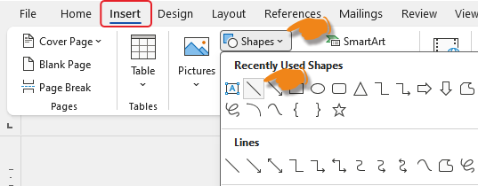
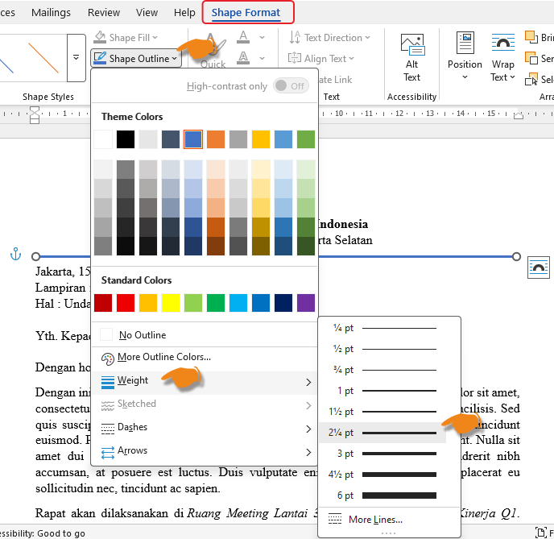
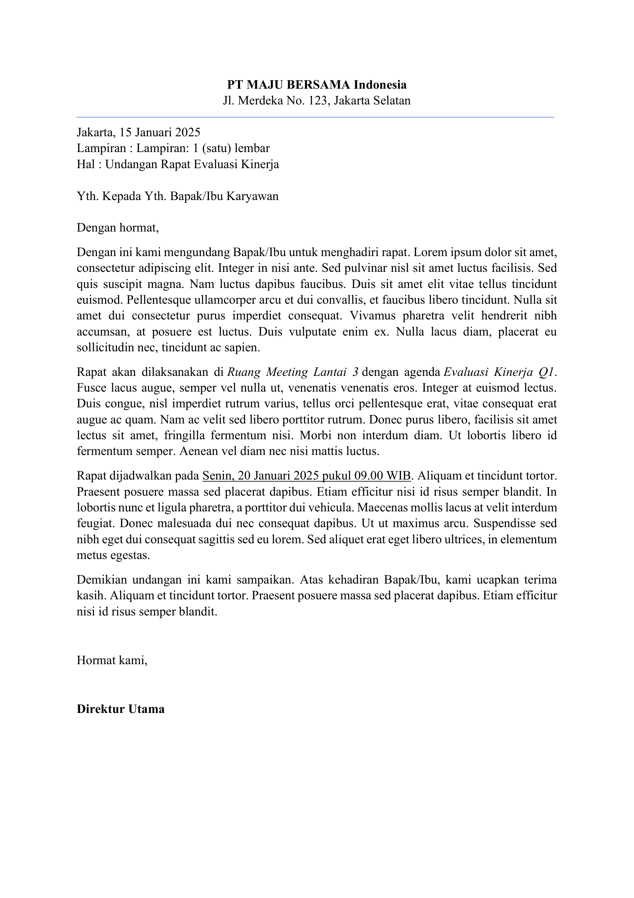
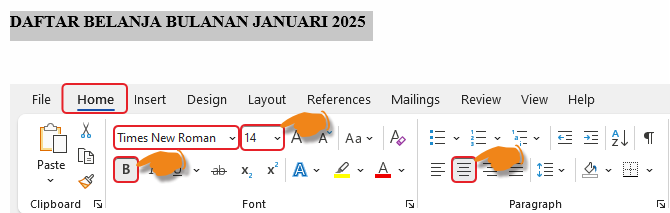
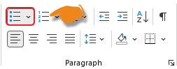
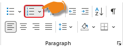
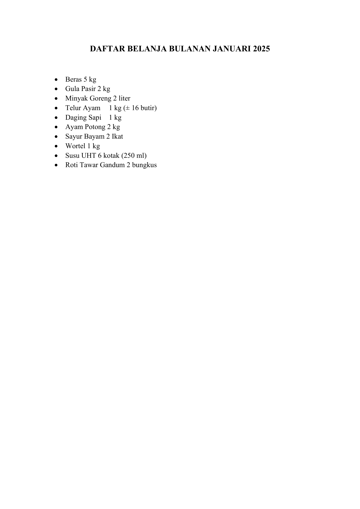

Materi Lengkap
- Buka Dokumen Baru → Blank Document.
-
Atur font dan ukuran:
- Tab Home → pada Group Font.
- Pilih font: Times New Roman, size: 12 pt.
-
Buat Kop Surat:
- Ketik Judul "PT MAJU BERSAMA INDONESIA".
- Blok teks → Ctrl + B → ubah ukuran Font menjadi 14 pt.
- Klik Tengah (Ctrl + E) untuk Rata Tengah.
- Tekan Enter, kemudian ketik Alamat Perusahaan.
- Ubah ukuran Font menjadi 10 pt dan Rata Tengah.
- Klik Insert → Shapes → pilih
Line.

- Drag garis dari kiri ke kanan di bawah Alamat Perusahaan.
- Atur ketebalan garis melalui Shape Format → Shape
Outline → Weight.

-
Buat Isi Surat:
- Ketik: "Jakarta, 15 Januari 2025" (Tanggal Surat).
- Tekan Enter → ketik: "Lampiran: 1 (satu) lembar".
- Tekan Enter → ketik: "Hal: Undangan Rapat Evaluasi Kinerja".
- Tekan Enter → ketik: "Kepada Yth. Bapak/Ibu Karyawan".
- Tekan Enter → ketik: "Dengan hormat,".
- Tekan Enter → ketik paragraf Isi Undangan, misal:
"Dengan ini kami mengundang Bapak/Ibu untuk menghadiri Rapat Evaluasi Kinerja yang akan dilaksanakan di Ruang Meeting Lantai 3 pada Senin, 20 Januari 2025 pukul 09.00 WIB." - Blok Isi Surat dari Paragraph 1 - 4 → klik Justify (Ctrl+J).
- Tempat dan Agenda: blok → Italic (Ctrl+I).
- Tanggal: blok → Underline (Ctrl+U).

- Buka Dokumen Baru → Blank Document.
- Contoh 10 Daftar Item Belanja:
Nama Barang Kuantitas Satuan Beras 5 kg Gula Pasir 2 kg Minyak Goreng 2 liter Telur Ayam 1 kg (± 16 butir) Daging Sapi 1 kg Ayam Potong 2 kg Sayur Bayam 2 Ikat Wortel 1 kg Susu UHT 6 kotak (250 ml) Roti Tawar Gandum 2 bungkus - Buat Header Daftar:
- Ketik Judul: "DAFTAR BELANJA BULANAN JANUARI 2025".
- Blok Judul → Bold (Ctrl+B) → Font Size: 14 pt →
Rata Tengah (Ctrl+E).

- Buat Daftar 10 Item dengan Bullets:
- Tekan Enter 2x setelah Header untuk membuat jarak.
- Ketik Item Pertama: "Beras 5 kg".

- Tekan Enter untuk menambah item berikutnya.
- Ketik 10 item sesuai contoh gambar.
Tips: Jika tidak muncul bullet otomatis, pastikan cursor berada di baris yang benar lalu klik ikon Bullets lagi.
- (Opsional) Jika menggunakan Numbering
pada Kategori:
- Klik ikon
Numbering di sebelah
Bullets.

- Pilih Format Angka (1, 2, 3...).
- Klik ikon
Numbering di sebelah
Bullets.
- Simpan: File → Save As → Daftar_Belanja_Bulanan.docx.

- Buka Dokumen Baru → Blank Document.
- Buat Multilevel List (Heading 1, Heading 2):
- Ketik: "BAB I — PENDAHULUAN".
- Blok teks → Tab Home → Group Styles → klik Heading 1.
- Tekan Enter → ketik: "1.1 Latar Belakang".
- Blok teks → Group Styles → klik Heading 2.
- Ketik 2-3 Paragraf dan Isi Latar Belakang (Lihat Tabel Contoh ↓ ).
Heading Style Contoh Teks / Isi BAB I — PENDAHULUAN Heading 1 (Judul bab, Bold, 14pt) 1.1 Latar Belakang Heading 2 (Sub-bab) Isi latar belakang Normal Rapat evaluasi kinerja merupakan kegiatan rutin yang dilaksanakan setiap akhir kuartal. Tujuannya adalah untuk mengecapaian target perusahaan dan mengidentifikasi hambatan yang dihadapi. Melalui rapat ini, seluruh divisi dapat berkoordinasi secara efektif. 1.2 Tujuan Heading 2 (Sub-bab) Isi tujuan Normal Tujuan rapat ini adalah: (1) mengevaluasi capaian kinerja Q1 2025, (2) membahas rencana strategis Q2, dan (3) memberikan apresiasi kepada karyawan berprestasi. BAB II — PEMBAHASAN Heading 1 (Judul bab, Bold, 14pt) 2.1 Evaluasi Kinerja Heading 2 (Sub-bab) Isi pembahasan Normal Berdasarkan data yang tersedia, capaian kinerja Q1 2025 mencapai 92% dari target yang ditetapkan. Divisi Sales berhasil melampaui target sebesar 105%, sedangkan divisi Marketing masih perlu peningkatan. - Tekan Enter → ketik: "1.2 Tujuan" → Heading 2.
- Ketik isi tujuan.
- Tekan Enter → ketik: "BAB II — PEMBAHASAN" → Heading 1.
- Lanjutkan dengan Sub-Bab (Heading 2) dan Isi.
- Tips: Heading 1 otomatis berformat Bold + Size lebih besar. Heading 2 lebih kecil dari Heading 1.
- Atur Tab Stops:
- Blok paragraf yang ingin diatur tabnya.
- Klik kanan → Paragraph → klik tombol Tabs... di pojok kiri bawah dialog.
- Atur Tab stop position (misal: 2 cm) → pilih alignment: Kiri, Tengah, Right, atau Decimal.
- Klik Set → ulangi untuk posisi lain (misal: 4 cm, 6 cm).
- Klik OK.
- Sekarang tekan Tab di keyboard untuk bergeser ke posisi Tab yang sudah diatur.
- Tambahkan Page Border:
- Tab Design (atau Page Layout di versi lama) → klik Page Borders.
- Pada dialog Borders and Shading → pastikan Tab Page Border aktif.
- Pilih Box → pilih style garis (misal: single line, 3/4 pt).
- Atur Color (opsional) dan Width.
- Atur Apply to: Whole document → OK.
- Atur Paragraph Spacing:
- Blok semua teks → Ctrl+A.
- Tab Home → Group Paragraph → klik ikon panah di pojok kanan bawah untuk membuka dialog Paragraph.
- Pada bagian Spacing → atur Before: 6 pt, After: 6 pt.
- Atur Line spacing: 1.15 atau 1.5.
- Klik OK.
- Simpan: File → Save As → "Laporan_Mini_Kegiatan_Rapat.docx".

-
Dasar:
Buatlah Surat Undangan Rapat dengan ketentuan:- Font: Times New Roman 12 pt.
- Kop surat:
- Judul Bold 14 pt.
- Rata tengah.
- Isi surat:
- Rata kiri-kanan (Justify).
- italic untuk tempat dan agenda rapat.
- underline untuk tanggal
- Spasi baris 1,5.
- Nama Direktur dicetak tebal.
Struktur Surat Undangan Rapat:Buat surat dengan susunan berikut di Microsoft Word Anda.
Bagian Format Contoh Teks Kop Surat Bold, 14pt, Tengah PT MAJU BERSAMA INDONESIA Alamat 10pt, Tengah Jl. Merdeka No. 123, Jakarta Selatan Garis Bawah Home → Borders → Bottom Border ───────────────────────────── Tanggal Kiri Jakarta, 15 Januari 2025 Lampiran Kiri Lampiran: 1 (satu) lembar Hal Kiri Undangan Rapat Evaluasi Kinerja Yth. … Kiri Kepada Yth. Bapak/Ibu Karyawan Salam Kiri Dengan hormat, Paragraf 1 Justify Dengan ini kami mengundang Bapak/Ibu untuk menghadiri rapat … Paragraf 2 Justify, italic pada tempat & agenda Rapat akan dilaksanakan di Ruang Meeting Lantai 3 dengan agenda Evaluasi Kinerja Q1. Paragraf 3 Justify, underline pada tanggal Rapat dijadwalkan pada Senin, 20 Januari 2025 pukul 09.00 WIB. Penutup Justify Demikian undangan ini kami sampaikan. Atas kehadiran Bapak/Ibu, kami ucapkan terima kasih. Tanda Tangan Kiri Hormat kami,
Direktur Utama- Buka Microsoft Word → pilih Blank Document.
-
Atur font dan ukuran:
- Tab Home → pada Group Font.
- Pilih font: Times New Roman, size: 12 pt.
-
Buat Kop Surat:
- Ketik Judul: "PT MAJU BERSAMA INDONESIA".
- Blok teks → Bold (Ctrl+B) → ubah font size ke 14 pt.
- Klik Tengah (Ctrl+E) untuk rata tengah.
- Tekan Enter → ketik alamat: "Jl. Merdeka No. 123, Jakarta Selatan" (font 10 pt, rata tengah).
- Tambahkan garis bawah: Home → Borders → Bottom Border.
-
Buat Isi Surat:
- Tekan Enter beberapa kali untuk memberi jarak setelah garis bawah.
- Ketik: "Jakarta, 15 Januari 2025" (tanggal surat).
- Tekan Enter → ketik: "Lampiran: 1 (satu) lembar".
- Tekan Enter → ketik: "Hal: Undangan Rapat Evaluasi Kinerja".
- Tekan Enter → ketik: "Kepada Yth. Bapak/Ibu Karyawan".
- Tekan Enter → ketik: "Dengan hormat,".
- Tekan Enter → ketik paragraf isi undangan, misal: "Dengan ini kami mengundang Bapak/Ibu untuk menghadiri rapat evaluasi kinerja yang akan dilaksanakan di Ruang Meeting Lantai 3 pada Senin, 20 Januari 2025 pukul 09.00 WIB."
- Blok seluruh isi surat → klik Justify (Ctrl+J).
- Tempat dan agenda: blok → Italic (Ctrl+I).
- Tanggal: blok → Underline (Ctrl+U).
-
Atur spasi baris 1,5:
- Blok seluruh isi surat.
- Tab Home → Group Paragraph → Line and Paragraph Spacing.
- Pilih 1.5.
-
Cetak tebal nama Direktur:
- Ketik "Hormat kami," lalu Enter 3 kali.
- Ketik nama Direktur → blok → Bold (Ctrl+B).
- Simpan file: File → Save As → beri nama Surat_Undangan_Microsoft_Word.docx.
-
Menengah:
Buat daftar belanja 10 item dengan bullets & numbering. Terapkan border kotak dan shading abu-abu pada header daftar. Atur indentasi gantung untuk item yang panjang.Contoh 10 Item Belanja:Ketik daftar berikut di Microsoft Word Anda.
Anda bisa mengubah barang sesuai kebutuhan. Yang penting ada 10 item dengan nama, kuantitas, dan satuan.No Nama Barang Kuantitas Satuan 1 Beras 5 kg 2 Gula Pasir 2 kg 3 Minyak Goreng 2 liter 4 Telur Ayam 1 kg (± 16 butir) 5 Daging Sapi 1 kg 6 Ayam Potong 2 kg 7 Sayur Bayam 2 Ikat 8 Wortel 1 kg 9 Susu UHT 6 kotak (250 ml) 10 Roti Tawar Gandum 2 bungkus - Buka dokumen baru → Blank Document.
-
Buat header daftar:
- Ketik Judul: "DAFTAR BELANJA BULANAN JANUARI 2025".
- Blok Judul → Bold (Ctrl+B) → font size 14 pt → Tengah (Ctrl+E).
- Blok Judul → Tab Home → Group Paragraph → klik panah di samping ikon Borders → pilih Borders and Shading.
- Pada Tab Borders → pilih Box → pilih style garis.
- Pada Tab Shading → pilih warna Gray-25% (abu-abu).
- Klik OK.
-
Buat daftar 10 item dengan bullets:
- Tekan Enter 2 kali setelah header untuk membuat jarak.
- Ketik item pertama: "Beras 5 kg".
- Tab Home → Group Paragraph → klik ikon Bullets (•).
- Tekan Enter untuk menambah item berikutnya.
- Ketik 10 item sesuai tabel contoh di atas.
- Tips: Jika tidak muncul bullet otomatis, pastikan cursor berada di baris yang benar lalu klik ikon Bullets lagi.
-
Terapkan numbering pada kategori (opsional):
- Jika ingin menggunakan numbering, klik ikon Numbering di sebelah Bullets.
- Pilih format angka (1, 2, 3...).
-
Atur indentasi gantung (hanging indent):
- Blok item yang tulisannya panjang > 1 baris.
- Klik kanan → pilih Paragraph.
- Pada bagian Indentation → Special → pilih Hanging.
- Atur By: 1 cm → OK.
- Hasil: Baris kedua dan seterusnya akan bergeser ke kanan 1 cm dari baris pertama.
- Simpan: File → Save As → Daftar_Belanja_Bulanan.docx.
-
Lanjutan:
Buat laporan mini 1 halaman dengan multilevel list (BAB I → 1.1 Latar Belakang → 1.2 Tujuan). Gunakan Tab stops, border halaman, dan paragraf spacing yang rapi.Struktur Laporan Mini:Susun laporan Anda dengan struktur berikut.
Anda bisa menambah/mengubah isi sesuai kebutuhan. Yang penting ada minimal 2 BAB dengan sub-bab (Heading 1 + Heading 2).Heading Style Contoh Teks / Isi BAB I — PENDAHULUAN Heading 1 (Judul bab, Bold, 14pt) 1.1 Latar Belakang Heading 2 (Sub-bab) Isi latar belakang Normal Rapat evaluasi kinerja merupakan kegiatan rutin yang dilaksanakan setiap akhir kuartal. Tujuannya adalah untuk mengecapaian target perusahaan dan mengidentifikasi hambatan yang dihadapi. Melalui rapat ini, seluruh divisi dapat berkoordinasi secara efektif. 1.2 Tujuan Heading 2 (Sub-bab) Isi tujuan Normal Tujuan rapat ini adalah: (1) mengevaluasi capaian kinerja Q1 2025, (2) membahas rencana strategis Q2, dan (3) memberikan apresiasi kepada karyawan berprestasi. BAB II — PEMBAHASAN Heading 1 (Judul bab, Bold, 14pt) 2.1 Evaluasi Kinerja Heading 2 (Sub-bab) Isi pembahasan Normal Berdasarkan data yang tersedia, capaian kinerja Q1 2025 mencapai 92% dari target yang ditetapkan. Divisi Sales berhasil melampaui target sebesar 105%, sedangkan divisi Marketing masih perlu peningkatan. - Buka dokumen baru → Blank Document.
-
Buat Multilevel List (Heading 1, Heading 2):
- Ketik: "BAB I — PENDAHULUAN".
- Blok teks → Tab Home → Group Styles → klik Heading 1.
- Tekan Enter → ketik: "1.1 Latar Belakang".
- Blok teks → Group Styles → klik Heading 2.
- Ketik 2-3 paragraf isi latar belakang (lihat tabel contoh di atas).
- Tekan Enter → ketik: "1.2 Tujuan" → Heading 2.
- Ketik isi tujuan.
- Tekan Enter → ketik: "BAB II — PEMBAHASAN" → Heading 1.
- Lanjutkan dengan sub-bab (Heading 2) dan isi.
- Tips: Heading 1 otomatis berformat Bold + size lebih besar. Heading 2 lebih kecil dari Heading 1.
-
Atur Tab Stops:
- Blok paragraf yang ingin diatur tabnya.
- Klik kanan → Paragraph → klik tombol Tabs... di pojok kiri bawah dialog.
- Atur Tab stop position (misal: 2 cm) → pilih alignment: Kiri, Tengah, Right, atau Decimal.
- Klik Set → ulangi untuk posisi lain (misal: 4 cm, 6 cm).
- Klik OK.
- Sekarang tekan Tab di keyboard untuk bergeser ke posisi Tab yang sudah diatur.
-
Tambahkan Page Border:
- Tab Design (atau Page Layout di versi lama) → klik Page Borders.
- Pada dialog Borders and Shading → pastikan Tab Page Border aktif.
- Pilih Box → pilih style garis (misal: single line, 3/4 pt).
- Atur Color (opsional) dan Width.
- Atur Apply to: Whole document → OK.
-
Atur Paragraph Spacing:
- Blok semua teks → Ctrl+A.
- Tab Home → Group Paragraph → klik ikon panah di pojok kanan bawah untuk membuka dialog Paragraph.
- Pada bagian Spacing → atur Before: 6 pt, After: 6 pt.
- Atur Line spacing: 1.15 atau 1.5.
- Klik OK.
- Simpan: File → Save As → Laporan_Mini_Kegiatan_Rapat.docx.
-
Dasar: Buat tabel
jadwal pelajaran 5 baris × 6 kolom. Merge sel untuk jam
istirahat. Beri warna header biru dengan teks putih. Atur
lebar kolom otomatis.
Struktur Tabel Jadwal Pelajaran:
Buat tabel berikut di Microsoft Word Anda (6 kolom × 9 baris).
Baris 1 = header (Jam Ke-, Senin s/d Jumat). Baris 4 di-merge untuk ISTIRAHAT. Anda bisa mengganti mata pelajaran sesuai jadwal sekolah.Jam Ke- Senin Selasa Rabu Kamis Jumat 1 Matematika Bahasa Indonesia IPA Bahasa Inggris PKn 2 Bahasa Indonesia Matematika Bahasa Inggris IPA Seni Budaya 3 IPA Penjaskes Matematika Bahasa Indonesia Prakarya ISTIRAHAT (merge sel B4:F4) 4 Bahasa Inggris TIK PKn Seni Budaya Matematika 5 PKn Prakarya Seni Budaya Penjaskes TIK 6 Penjaskes Multimedia Bimbingan Konseling PKK — - Buka dokumen baru → Blank Document.
-
Insert Tabel:
- Tab Insert → Table → Insert Table.
- Isi: Number of columns: 6, Number of rows: 9 (1 header + 7 data + 1 istirahat).
- Klik OK.
-
Isi header tabel:
- Baris 1: Jam Ke-, Senin, Selasa, Rabu, Kamis, Jumat.
- Blok baris 1 → Bold (Ctrl+B) → Tengah (Ctrl+E).
-
Isi data mata pelajaran:
- Isi baris 2–7 dengan mata pelajaran sesuai tabel contoh di atas.
- Baris 2 = Jam ke-1, Baris 3 = Jam ke-2, dst.
-
Merge sel untuk jam istirahat:
- Blok sel B4 sampai F4 (5 kolom di baris 4).
- Klik kanan → Merge Cells.
- Ketik: "ISTIRAHAT" di sel yang sudah di-merge.
- Tengah (Ctrl+E) + Bold (Ctrl+B).
-
Warna header biru dengan teks putih:
- Blok baris 1 (header).
- Klik kanan → Borders and Shading.
- Pilih Tab Shading → pilih warna Blue → OK.
- Dengan header masih terblok → ubah font color menjadi White (Home → Font Color).
-
Atur lebar kolom otomatis:
- Klik di dalam tabel → klik ikon cross di pojok kiri atas tabel untuk memilih seluruh tabel.
- Tab Layout (Table Tools) → AutoFit → AutoFit Contents.
- Atau pilih AutoFit Window agar tabel memenuhi lebar halaman.
- Simpan: File → Save As → Jadwal_Pelajaran_Merge_Cell.docx.
-
Menengah: Buat brosur
produk — WordArt Judul "PRODUK TERBARU", tabel daftar produk
(No, Nama, Harga, Stok), gambar produk dengan text wrapping
Square. Gunakan Drop Cap di awal paragraf pertama.
Contoh Tabel Daftar Produk:
Siapkan data berikut untuk dimasukkan ke tabel di Word.
Anda bisa mengganti produk sesuai kebutuhan. Yang penting ada kolom No, Nama Produk, Harga, dan Stok.No Nama Produk Harga Stok 1 Laptop ASUS VivoBook Rp 8.500.000 25 unit 2 Samsung Galaxy S24 Rp 12.999.000 40 unit 3 Apple iPad 10th Gen Rp 7.499.000 15 unit 4 Sony WH-1000XM5 Rp 4.299.000 30 unit - Buka dokumen baru → Blank Document.
-
Buat WordArt Judul:
- Tab Insert → Group Text → klik WordArt.
- Pilih gaya WordArt (misal: Fill - Blue, Accent 1).
- Ketik: "PRODUK TERBARU".
- Blok teks → Tengah (Ctrl+E) → atur ukuran font agar besar dan menarik.
- Tekan Enter 2 kali setelah WordArt untuk jarak.
-
Buat tabel daftar produk:
- Tab Insert → Table → Insert Table → isi 5 baris × 4 kolom (1 header + 4 data).
- Isi header: No, Nama Produk, Harga, Stok.
- Isi 4 baris data sesuai tabel contoh di atas.
- Blok header → Bold (Ctrl+B) → Tengah (Ctrl+E).
- Blok header → klik kanan → Borders and Shading → Tab Shading → pilih warna gelap (misal: Dark Blue) → OK.
- Dengan header masih terblok → ubah font color menjadi White.
-
Sisipkan gambar produk:
- Tab Insert → Pictures → pilih gambar produk dari komputer Anda.
- Klik gambar → Tab Picture Format → Group Arrange → Wrap Text → pilih Square.
- Drag gambar ke samping atau bawah tabel. Teks akan mengelilingi gambar.
- Atur ukuran gambar dengan menarik sudut pojok gambar (tahan Shift agar proporsional).
-
Gunakan Drop Cap:
- Ketik paragraf deskripsi produk (misal: "Produk elektronik terbaru kami hadir dengan teknologi terkini…").
- Klik di awal paragraf → Tab Insert → Group Text → Drop Cap.
- Pilih Dropped (huruf pertama membesar dan menjorok ke bawah).
- Untuk mengatur jarak: Drop Cap Options → Lines to drop: 3.
-
Rapikan dengan Text Box (opsional):
- Tab Insert → Text Box → Draw Text Box.
- Buat kotak di area kosong → isi dengan teks promosi (misal: "PROMO SPESIAL! Diskon 20%").
- Klik kanan Text Box → Format Shape → pilih Fill warna kuning.
- Simpan: File → Save As → Brosur_Produk_Terbaru.docx.
-
Lanjutan: Buat
infografis satu halaman: gabungan shapes, SmartArt Hierarchy
3 level, WordArt, gambar, dan Text Box. Atur layering (Bring
to Front / Send to Back) dan Group objek.
Struktur SmartArt Hierarchy (3 Level):
Siapkan data berikut untuk dimasukkan ke SmartArt Organization Chart.
Level 1 = Direktur (1 orang). Level 2 = Manager (2 orang). Level 3 = Staff (masing-masing 2 orang di bawah manager).Level Jabatan Nama Level 1 Direktur Utama Budi Santoso Level 2 Manager Produksi Ani Wijaya Level 2 Manager Marketing Dedi Kurniawan Level 3 Staff Produksi A Rina Saputra Level 3 Staff Produksi B Tommy Hadi Level 3 Staff Marketing A Sari Dewi Level 3 Staff Marketing B Andi Cahyono - Buka dokumen baru → ubah Orientation ke Landscape (Tab Layout → Orientation → Landscape) agar infografis lebih luas.
-
Buat WordArt Judul utama:
- Tab Insert → Group Text → WordArt.
- Pilih gaya menarik → ketik: "STRUKTUR ORGANISASI".
- Tengah (Ctrl+E) → posisikan di tengah atas halaman.
-
Buat SmartArt Hierarchy 3 level:
- Tab Insert → SmartArt → pilih Hierarchy → Organization Chart.
- Klik OK → SmartArt akan muncul di dokumen.
- Di panel kiri SmartArt, isi nama jabatan sesuai tabel contoh di atas.
- Untuk menambah level: klik shape → Tab SmartArt Design → Add Shape → Add Shape Below.
- Untuk mengisi nama: klik shape → ketik langsung di shape atau di panel teks.
- Ubah warna: SmartArt Design → Change Colors → pilih skema warna.
-
Tambahkan Shapes dekoratif:
- Tab Insert → Shapes → pilih Rounded Rectangle atau Oval.
- Gambar di area kosong → Shape Fill pilih warna gradasi.
- Insert → Shapes → Arrow untuk membuat garis penghubung.
- Klik kanan shape → Edit Text untuk menambahkan teks di dalam shape.
-
Sisipkan gambar:
- Tab Insert → Pictures → pilih gambar/foto tim.
- Klik gambar → Tab Picture Format → Wrap Text → pilih Tight atau Through agar menyatu dengan elemen lain.
-
Atur layering (Bring to Front / Send to Back):
- Klik kanan objek → Bring to Front (tampil di depan) atau Send to Back (tampil di belakang).
- Gunakan untuk menumpuk shapes, gambar, dan teks secara artistik.
- Tips: Jika objek tertumpuk dan sulit diklik, gunakan Tab untuk berpindah antar objek.
-
Grup objek:
- Klik objek pertama → tahan Shift → klik objek lainnya satu per satu.
- Klik kanan → Group → Group.
- Sekarang semua objek menjadi satu kesatuan yang mudah dipindahkan.
- Untuk meng-ungroup: klik kanan group → Group → Ungroup.
- Simpan: File → Save As → Infografis_Satu_Halaman.docx.
-
Dasar: Buat dokumen 2
halaman dengan header "Laporan Perusahaan" dan footer nomor
halaman (halaman X dari Y). Atur margin 2,5 cm dan ukuran
kertas A4.
Apa itu Header, Footer, dan Margin?
- Header adalah area di bagian atas setiap halaman yang muncul secara otomatis (misal: nama perusahaan, Judul dokumen).
- Footer adalah area di bagian bawah setiap halaman (misal: nomor halaman, tanggal).
- Margin adalah jarak antara tepi kertas dengan tepi konten. Margin 2,5 cm berarti ada ruang kosong 2,5 cm di setiap sisi.
- Page Number adalah nomor halaman yang diperbarui otomatis oleh Word.
Struktur Dokumen 2 Halaman:Buat dokumen dengan struktur berikut di Microsoft Word Anda.
Header dan footer akan muncul otomatis di setiap halaman.Halaman Header Isi Footer Halaman 1 Laporan Perusahaan (Bold, 12pt, Tengah) LAPORAN PENJUALAN SEMESTER I 2026 + paragraf isi Halaman 1 dari 2 Halaman 2 Laporan Perusahaan (otomatis sama) ANALISIS DAN KESIMPULAN + daftar Halaman 2 dari 2 (otomatis) - Buka dokumen baru → pilih Blank Document.
-
Atur ukuran kertas A4:
- Tab Layout → Size → pilih A4.
-
Atur margin 2,5 cm:
- Tab Layout → Margins → Custom Margins.
- Isi: Top 2,5 cm, Bottom 2,5 cm, Left 2,5 cm, Right 2,5 cm.
- Klik OK.
-
Buat Header:
- Tab Insert → Header → pilih Blank.
- Ketik: "Laporan Perusahaan".
- Blok teks → Bold (Ctrl+B) → font size 12 pt.
- Klik Tengah (Ctrl+E).
-
Buat Footer dengan nomor halaman:
- Tab Insert → Footer → pilih Blank.
- Ketik: "Halaman " (dengan spasi di belakangnya).
- Tab Insert → Quick Parts → Field → pilih Page → OK.
- Ketik: " dari " (dengan spasi di depan dan belakangnya).
- Tab Insert → Quick Parts → Field → pilih NumPages → OK.
- Hasil: "Halaman 1 dari 2" (nomor akan berubah otomatis).
-
Keluar dari mode Header/Footer:
- Klik di luar area header/footer, atau tekan tombol Esc.
- Tips: Jika ingin mengedit header/footer lagi, cukup double klik di area header atau footer.
-
Buat isi halaman pertama:
- Klik di area isi dokumen (bukan header/footer).
- Ketik Judul: "LAPORAN PENJUALAN SEMESTER I 2026".
- Blok Judul → Bold (Ctrl+B) → font size 12 pt → Tengah (Ctrl+E).
- Tekan Enter → ketik paragraf isi: "Laporan ini disusun untuk memberikan gambaran perkembangan penjualan perusahaan selama semester pertama tahun 2026. Penjualan menunjukkan tren positif pada berbagai kategori produk dengan peningkatan sebesar 18% dibandingkan periode sebelumnya."
-
Buat halaman kedua:
- Tekan Ctrl + Enter (Page Break — halaman baru dengan header & footer yang sama).
- Ketik Judul: "ANALISIS DAN KESIMPULAN".
- Blok Judul → Bold (Ctrl+B) → font size 12 pt → Tengah (Ctrl+E).
- Tekan Enter → ketik isi dengan daftar numbering: Program promosi, Perluasan pasar, Ketersediaan stok.
- Tambahkan paragraf kesimpulan.
- Simpan: File → Save As → dokumen_2_halaman.docx.
-
Menengah: Buat laporan
dengan Section Break — halaman 1 portrait (teks biasa),
halaman 2 landscape (tabel lebar). Header/footer berbeda di
tiap section.
Apa itu Section Break?
Section Break memecah dokumen menjadi beberapa "bagian" (section) yang masing-masing bisa punya pengaturan berbeda — tanpa mempengaruhi bagian lain. Misalnya:
- Halaman 1 → Portrait, tanpa header khusus
- Halaman 2 → Landscape, dengan header berbeda
Mengapa tidak pakai Page Break?
- Page Break hanya memindahkan teks ke halaman berikutnya. Semua halaman tetap dalam satu section, sehingga perubahan orientation atau header akan berlaku untuk SEMUA halaman.
- Section Break memungkinkan setiap section punya pengaturan independen.
Contoh Tabel Lebar (Landscape):Buat tabel berikut di halaman kedua (landscape). Tabel ini terlalu lebar untuk Portrait.
Anda bisa mengganti data sesuai kebutuhan. Yang penting ada minimal 3 baris data dengan banyak kolom.Produk Jan Feb Mar Apr Mei Jun Jul Agu Sep Total Laptop 45 52 48 60 55 63 58 70 65 516 Smartphone 120 135 128 142 138 155 148 160 170 1.296 Tablet 30 28 35 32 40 38 42 45 50 340 - Buka dokumen baru → pilih Blank Document.
-
Buat halaman pertama (Portrait):
- Tab Layout → Orientation → pastikan Portrait.
- Ketik Judul: "LAPORAN PERUSAHAAN" → Bold → Tengah.
- Ketik sub-Judul: "Pendahuluan".
- Ketik paragraf isi laporan.
-
Membuat Section Break (BUKAN Page Break):
- Letakkan kursor di akhir halaman pertama.
- Tab Layout → Breaks → Section Breaks → klik Next Page.
- Yang terjadi: Word membuat halaman baru sebagai section terpisah. Sekarang ada Section 1 (halaman 1) dan Section 2 (halaman 2).
-
Ubah halaman kedua menjadi Landscape:
- Klik di halaman kedua (Section 2).
- Tab Layout → Orientation → Landscape.
- Yang terjadi: Hanya halaman kedua yang berubah ke Landscape. Halaman pertama tetap Portrait.
-
Buat tabel lebar di halaman Landscape:
- Tab Insert → Table → Insert Table.
- Isi: Columns: 11, Rows: 4 (1 header + 3 data).
- Isi header: Produk, Jan, Feb, dst. hingga Total.
- Isi data sesuai tabel contoh di atas.
- Blok header → Bold → Tengah → beri warna shading.
- Atur lebar kolom: klik dalam tabel → Tab Layout → AutoFit → AutoFit Contents.
-
Membuat Header berbeda tiap Section:
- Double klik area Header di halaman kedua.
- Perhatikan label:
Header -Section 2-dan tulisanSame as Previous. - Di Tab Header & Footer, klik Link to Previous untuk non-aktifkan tombol tersebut.
- Yang terjadi jika Link to Previous TIDAK dinonaktifkan: Header halaman kedua akan otomatis sama dengan halaman pertama. Ketika Anda mengubah header halaman kedua, halaman pertama juga ikut berubah. Inilah mengapa Anda HARUS menonaktifkannya.
- Ketik: "LAPORAN PENJUALAN" di header halaman kedua.
-
Membuat Footer berbeda tiap Section:
- Double klik area Footer di halaman kedua.
- Klik Link to Previous untuk non-aktifkan.
- Ketik: "Tabel Penjualan" di footer halaman kedua.
- Simpan: File → Save As → laporan_dengan_Section_Break.docx.
-
Lanjutan: Mail merge
surat undangan untuk 5 murid. Buat data source di Excel
(field: Nama, Perusahaan, Kota, Jabatan). Insert merge
field, preview, finish & merge. Simpan sebagai template
.dotx.
Apa itu Mail Merge dan Kapan Digunakan?
Mail Merge menggabungkan 2 program: Microsoft Word (dokumen) + Microsoft Excel (data). Hasilnya: 1 surat yang sama bisa menghasilkan banyak surat pribadi secara otomatis.
Kapan Mail Merge digunakan?
- Mengirim surat undangan/e-mail massal dengan isi sama tapi data penerima berbeda.
- Membuat label alamat untuk ribuan kiriman.
- Membuat sertifikat untuk banyak peserta.
- Membuat kartu nama atau ID card secara massal.
Yang dibutuhkan:
- Dokumen Utama (Word) — surat/template yang isinya tetap.
- Data Source (Excel) — daftar penerima yang isinya berubah-ubah.
Mail Merge = 1 Dokumen + Banyak Penerima Contoh: Anda membuat 1 surat undangan → secara otomatis menghasilkan: Surat untuk Budi Surat untuk Siti Surat untuk Andi Surat untuk Dewi Surat untuk Rina
Struktur Latihan:
File 1: Excel (Data Source, buka di Microsoft Excel)
Buat file: murid.xlsx
Isi dengan data murid: Nama, Perusahaan, Kota, Jabatan
File 2: Surat Undangan (Buka di Microsoft Word)Nama Perusahaan Kota Jabatan Budi Santoso PT. Maju Jaya Jakarta Manager Siti Aminah CV. Sukses Selalu Bandung Direktur Andi Wijaya PT. Sejahtera Abadi Surabaya Supervisor Dewi Lestari PT. Makmur Sentosa Medan Kepala Divisi Rina Kurniawan CV. Gemilang Bersama Yogyakarta Staf Administrasi
Buat file: Surat Undangan.docx
Buat surat seperti biasa:
Perhatikan:PT MAJU BERSAMA INDONESIA Perihal : Undangan Seminar Bisnis Yth. <<Nama>> <<Jabatan>> <<Perusahaan>> Di <<Kota>> Dengan hormat, Kami mengundang Bapak/Ibu untuk menghadiri Seminar Bisnis Nasional 2026. Hormat kami, Panitia
Tanda<< >>menunjukkan merge field yang akan digantikan dengan data dari Excel.
-
Buat Data Source di Excel:
- Buka Microsoft Excel → buat file baru.
- Baris 1 = header kolom: Nama, Perusahaan, Kota, Jabatan.
- Isi baris 2–6 dengan data 5 murid sesuai tabel contoh di atas.
- Simpan sebagai murid.xlsx → tutup file Excel.
- Penting: File Excel harus ditutup sebelum digunakan di Word.
-
Buat Dokumen Utama di Word:
- Buka Microsoft Word → Blank Document.
- Ketik surat undangan sesuai pola di atas (dengan tanda
<< >>untuk merge field). - Simpan sebagai Surat Undangan.docx.
-
Memulai Mail Merge:
- Tab Mailings → Select Recipients → Use Existing List.
- Pilih file: murid.xlsx.
- Klik: Sheet1$ (atau nama sheet yang sesuai) → OK.
-
Insert Merge Field:
- Letakkan kursor pada baris Yth. (atau di bawahnya).
- Tab Mailings → Insert Merge Field.
- Pilih: Nama → Enter → Jabatan → Enter → Perusahaan → Enter → ketik "Di " → Kota.
- Hasil:
<<Nama>>,<<Jabatan>>,<<Perusahaan>>,<<Kota>>akan muncul di dokumen.
-
Preview Results:
- Tab Mailings → Preview Results.
- Word mengganti field otomatis dengan data dari Excel.
- Contoh:
<<Nama>>berubah menjadi Budi Santoso. - Gunakan tombol ▶ Next Record / ◀ Previous Record untuk berpindah antar penerima.
-
Finish & Merge:
- Tab Mailings → Finish & Merge.
- Ada 3 pilihan:
- Edit Individual Documents — Membuat dokumen BARU berisi semua surat (recommended untuk latihan).
- Print Documents — Langsung cetak.
- Send E-mail Messages — Kirim email otomatis.
- Pilih Edit Individual Documents → OK.
- Yang terjadi: Word membuat dokumen baru (
Letters1.docx) yang berisi:- Halaman 1 → Surat untuk Budi Santoso
- Halaman 2 → Surat untuk Siti Aminah
- Halaman 3 → Surat untuk Andi Wijaya
- Halaman 4 → Surat untuk Dewi Lestari
- Halaman 5 → Surat untuk Rina Kurniawan
- Penting: Dokumen ini belum tersimpan. Anda harus menyimpannya secara manual: File → Save As → beri nama, misal: Surat_Undangan_Lengkap.docx.
-
Simpan Sebagai Template (.dotx):
- Kembali ke dokumen surat asli (yang berisi merge field).
- Pilih: File → Save As.
- Pada tipe file: pilih Word Template (*.dotx).
- Nama: Template_Undangan.dotx.
-
Mengapa pakai .dotx?
.docx= dokumen biasa, digunakan sekali..dotx= template, digunakan berulang kali.- Tahun depan tinggal: Klik Template → Hubungkan Excel baru → Merge lagi. Tidak perlu membuat surat dari awal.
-
Dasar: Jalankan
Spelling & Grammar check pada dokumen. Gunakan Find
& Replace untuk mengganti kata tertentu. Sisipkan page
number di footer.
Apa itu Spelling & Grammar, Find & Replace?
- Spelling & Grammar — Fitur bawaan Word untuk mendeteksi kesalahan ejaan dan tata bahasa. Tekan F7 untuk menjalankannya.
- Find & Replace — Fitur untuk mencari kata tertentu dan menggantinya secara massal. Sangat berguna saat ingin mengganti nama perusahaan, tanggal, atau kata yang salah eja di seluruh dokumen.
- Page Number — Nomor halaman yang diperbarui otomatis oleh Word di area footer atau header.
- Buka dokumen latihan → file Spelling_Grammar.docx.
-
Praktik 1 — Spelling & Grammar:
- Tab Review → pastikan Language sudah "Indonesian (Indonesia)".
- Klik Spelling & Grammar atau tekan F7.
- Word akan menandai kata yang salah eja. Contoh kata yang mungkin ditandai:
PT Maju Bersama memiliki aktifitas distribusi bahan bangunan di beberapa kota. Untuk menjaga kwalitas layanan, setiap karyawan harus mengikuti prosedur yang berlaku. Analisa penjualan dilakukan setiap bulan untuk mengurangi resiko kesalahan. Perusahaan juga memberikan ijin kepada karyawan yang memenuhi persyaratan administrasi.
- aktifitas → seharusnya aktivitas
- kwalitas → seharusnya kualitas
- analisa → seharusnya analisis
- resiko → seharusnya risko
- ijin → seharusnya izin
-
Perbaiki setiap kata:
- Pilih kata yang benar dari kotak Suggestions.
- Klik Change untuk mengubah satu per satu, atau Change All untuk mengubah semua sekaligus.
-
Menangani false positive (kata yang salah ditandai):
- Word mungkin menandai "penjualan" sebagai salah, padahal benar.
- Klik Ignore Once (abaikan sekali) atau Add to Dictionary (tambahkan ke kamus agar tidak ditandai lagi).
- Lanjutkan hingga Word menampilkan pesan bahwa pemeriksaan telah selesai.
-
Praktik 2 — Find & Replace:
- Tab Home → Group Editing → klik Replace (atau tekan Ctrl+H).
- Di Find what: ketik "perusahaan".
- Di Replace with: ketik "PT. Maju Jaya".
- Klik Replace All → semua kata "perusahaan" berubah menjadi "PT. Maju Jaya".
- Klik OK pada pesan konfirmasi.
-
Praktik 3 — Insert Page Number:
- Tab Insert → Page Number → Bottom of Page → pilih Plain Number 2 (tengah).
- Nomor halaman muncul di tengah footer setiap halaman.
- Untuk keluar dari mode footer: klik di luar area footer atau tekan Esc.
- Simpan: File → Save As → Spelling_Grammar_Lengkap.docx.
-
Menengah: Aktifkan
Track Changes, lakukan beberapa edit (hapus, tambah, format
ulang). Tambahkan Comments pada bagian tertentu. Bandingkan
2 versi dokumen dengan Compare.
Apa itu Track Changes, Comments, dan Compare?
- Track Changes — Fitur untuk mencatat seluruh perubahan (tambah, hapus, format) pada dokumen. Berguna saat proses revisi agar reviewer bisa melihat apa yang diubah.
- Comments — Catatan atau saran yang ditambahkan di margin dokumen tanpa mengubah isi. Berguna untuk memberi feedback.
- Compare — Fitur untuk membandingkan dua versi dokumen dan menampilkan perbedaannya secara detail.
- Buka dokumen latihan → file Menggunakan_Track_Changes.docx. Berikut isi dokumen awal:
PT Maju Bersama bergerak di bidang distribusi bahan bangunan. Perusahaan memiliki beberapa cabang di Jawa Timur. Setiap karyawan wajib mengikuti prosedur kerja yang telah ditetapkan perusahaan. Pelayanan kepada pelanggan harus dilakukan dengan cepat dan tepat.
-
Praktik 1 — Menggunakan Track Changes:
- Tab Review → klik Track Changes hingga fitur aktif ( tombol berwarna).
- Ubah tampilan dari Simple Markup menjadi All Markup agar semua perubahan terlihat jelas.
-
Lakukan perubahan berikut:
- A. Hapus teks: Blok kata "Jawa Timur" → tekan Delete. Hasil: kata "Jawa Timur" ditandai dengan coret (strikethrough) berwarna merah.
- B. Tambah teks: Letakkan kursor di akhir paragraf → ketik: "Perusahaan terus berupaya meningkatkan kualitas layanan dan kepuasan pelanggan." Hasil: teks baru ditandai dengan underline berwarna.
- C. Format ulang: Blok "PT Maju Bersama" → tekan Bold (Ctrl+B). Hasil: perubahan format ditandai di margin.
-
Accept / Reject perubahan:
- Tab Review → Group Changes.
- Klik panah di bawah Accept → pilih Accept All Changes untuk menerima semua perubahan sekaligus.
- Atau klik Accept satu per satu untuk meninjau perubahan individually.
- Untuk membatalkan perubahan: klik Reject → Reject All Changes.
-
Praktik 2 — Menambahkan Comments:
- Blok teks: "pelayanan kepada pelanggan".
- Tab Review → New Comment.
- Ketik komentar: "Mohon dijelaskan standar pelayanan yang digunakan."
- Komentar muncul di margin kanan dokumen.
- Simpan dokumen revisi: File → Save As → Menggunakan_Track_Changes_Revisi.docx.
-
Praktik 3 — Membandingkan Dua Dokumen (Compare):
- Tab Review → Compare → Compare...
- Original Document: pilih Menggunakan_Track_Changes.docx.
- Revised Document: pilih Menggunakan_Track_Changes_Revisi.docx.
- Klik OK.
-
Hasil Compare:
- Word menampilkan dokumen baru dengan 3 panel: dokumen hasil perbandingan (kiri), dokumen revisi (kanan), dan panel revisi (atas).
- Perubahan ditandai: teks yang dihapus dan teks yang ditambahkan.
- Ringkasan revisi muncul di panel sebelah kiri.
- Simpan: File → Save As → Hasil_Compare_Dokumen.docx.
-
Lanjutan (Final): Buat
makalah mini 3 halaman: Cover (tanpa header), Daftar Isi
otomatis (Heading 1, 2), isi dengan tabel & gambar,
header/footer berbeda tiap section. Gunakan Section Break
untuk landscape di halaman tabel. Track Changes diaktifkan
selama pengerjaan.
Apa itu Daftar Isi Otomatis?
Daftar Isi Otomatis dibuat oleh Word berdasarkan style Heading (Heading 1, Heading 2, dst.) yang Anda berikan pada Judul bab/sub-bab. Kelebihannya:
- Nomor halaman diperbarui otomatis jika konten berubah.
- Cukup klik kanan → Update Field untuk memperbarui setelah editing.
- Tidak perlu mengetik nomor halaman secara manual.
Struktur Makalah Mini (4 Section):Makalah ini terdiri dari 4 section dengan orientasi dan header/footer berbeda.
Section Halaman Orientation Header Footer Isi Section 1 1 Portrait Tanpa header Tanpa nomor halaman Cover Section 2 2 Portrait Daftar Isi Nomor halaman mulai dari 1 Daftar Isi Otomatis Section 3 3 Landscape Isi Makalah Nomor halaman lanjutan Tabel lebar Section 4 4 Portrait Kesimpulan Nomor halaman lanjutan Kesimpulan - Buka dokumen baru → pilih Blank Document.
-
Buat Cover (Section 1):
- Ketik Judul: "PEMANFAATAN TEKNOLOGI INFORMASI DALAM DUNIA KERJA" → Bold → Tengah.
- Tekan Enter beberapa kali → ketik: "Disusun Oleh:" → Enter → "Nama Peserta".
- Enter lagi → ketik: "Kursus Microsoft Word" → Enter → "2026".
- Ketentuan: Cover tanpa header, tanpa nomor halaman.
-
Akhiri Cover dengan Section Break:
- Posisikan kursor di akhir halaman cover.
- Tab Layout → Breaks → Section Breaks → Next Page.
- Yang terjadi: Section 1 (Cover) terpisah dari Section 2 (Isi).
-
Buat halaman Daftar Isi (Section 2):
- Ketik: "DAFTAR ISI" → Bold → Tengah.
- Tekan Ctrl + Enter (Page Break, BUKAN Section Break) untuk pindah halaman.
-
Buat isi dokumen dengan Heading:
- Ketik: "PENDAHULUAN" → blok → Tab Home → Heading 1.
- Ketik: "Latar Belakang" → blok → Heading 2.
- Ketik paragraf isi (2-3 paragraf).
- Tekan Ctrl + Enter → ketik: "PEMBAHASAN" → Heading 1.
- Tambahkan isi beberapa paragraf.
-
Buat halaman tabel Landscape (Section 3):
- Di akhir halaman Pembahasan → Layout → Breaks → Next Page.
- Di halaman baru → Layout → Orientation → Landscape.
- Buat tabel lebar (10 kolom × 4 baris). Isi data sesuai kebutuhan.
- Blok header tabel → Bold → Tengah → beri warna shading.
-
Kembali ke Portrait (Section 4):
- Di bawah tabel → Layout → Breaks → Next Page.
- Di halaman baru → Layout → Orientation → Portrait.
- Ketik: "KESIMPULAN" → Heading 1.
- Isi beberapa paragraf kesimpulan.
-
Buat Daftar Isi Otomatis:
- Kembali ke halaman DAFTAR ISI.
- Posisikan kursor di bawah tulisan "DAFTAR ISI".
- Tab References → Table of Contents → pilih Automatic Table 1.
- Daftar Isi muncul otomatis berdasarkan Heading yang sudah dibuat.
-
Atur Nomor Halaman:
- Double klik area footer di halaman DAFTAR ISI.
- Jika ada tulisan Same as Previous → klik Link to Previous untuk non-aktifkan.
- Tab Insert → Page Number → Bottom of Page → Plain Number 2.
- Untuk mulai dari nomor 1: Page Number → Format Page Numbers → Start At: 1 → OK.
-
Non-aktifkan Header/Footer di Cover:
- Double klik area header di halaman Cover (Section 1).
- Klik Link to Previous untuk non-aktifkan.
- Hapus teks header jika ada.
- Ulangi untuk footer: non-aktifkan Link to Previous lalu hapus nomor halaman.
- Simpan: File → Save As → Makalah_Mini_Profesional.docx.